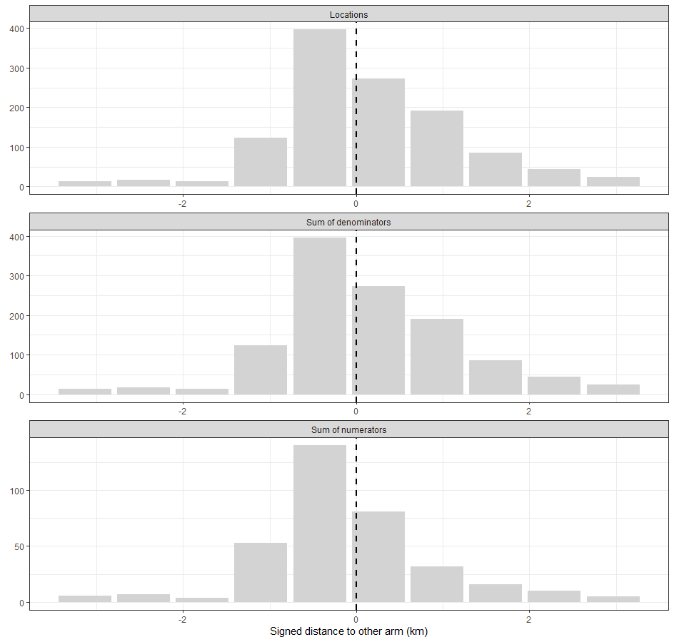

Use Case 06: Thematic mapping of the geography of a CRT
Usecase6.RmdCRTspat is intended to facilitate thematic mapping of
the geography of a CRT at each stage from enumeration of the trial
population to data analysis. Graphical outputs are generated with
ggplot2(). In addition there is a function,
CRTwrite() to export the thematic layers and shapefiles to
GIS formats.
The same plotCRT() function is used at each stage in the
trial (see below), with the functionality available expanding as more
fields are populated in the CRTsp object. When applied to
output from CRTanalysis() plotCRT() that
analyse the spillover interval, an expanded set of thematic maps are
available, including overlay plots showing the spillover zone (i.e. the
subset of the study area estimated to have effects of spillover) and
thematic maps of spatial predictions.
# using the same dataset as for Use Case 1.
library(CRTspat)
exampleCRT <- readdata('exampleCRT.txt')
plotCRT(exampleCRT, map = TRUE, fill = 'none', showLocations=TRUE)
Fig 6.1 Locations
If the clusters have been established, a map can be drawn showing where they are located. The clusters can be distinguished by colour or by number. To ensure that the image is not too crowded, by default the locations are not shown (but they can be shown if required).
plotCRT(exampleCRT, map = TRUE, fill = 'clusters', showClusterLabels = TRUE, labelsize =3)
Fig 6.2 Clusters
Similarly, the map of arms is available if the trial has been randomized. Buffer zones can be plotted on this map.
plotCRT(exampleCRT, map = TRUE, fill = 'arms', showLocations=TRUE)
plotCRT(exampleCRT, map = TRUE, fill = 'arms', showBuffer=TRUE,
showClusterBoundaries = FALSE, buffer_width = 0.5)## Buffer includes locations within 500m of the opposing arm
Fig 6.3 Arms with locations
Fig 6.4 Arms with 500m buffer
zone shaded
Once data have been collected, plotCRT() can be used to
generate a bar plot to illustrate how much of the data are found close
to the boundary between the arms.
plotCRT(exampleCRT, map = FALSE)

Fig 6.5 Numbers of observations
by distance from boundary
The results of the data analysis can be illustrated with further graphics. The blue shaded section of Figure 6.8 indicates the spillover zone, corresponding to those locations that fall within the central 95% of the estimated sigmoid of the of the effect size by distance from the boundary between the arms.
analysis <- CRTanalysis(exampleCRT, cfunc = "P", method = "LME4")## Estimated scale parameter: 0.45 Signed distance -Signed distance to other arm (km)
summary(analysis)##
## =====================CLUSTER RANDOMISED TRIAL ANALYSIS =================
## Analysis method: LME4
## Link function: logit
## Measure of distance or surround: Signed distance to other arm (km)
## Estimated scale parameter: 0.45
## Model formula: pvar + (1 | cluster)
## Error function model for spillover
## Estimates: Control: 0.418 (95% CL: 0.331 0.511 )
## Intervention: 0.186 (95% CL: 0.135 0.251 )
## Efficacy: 0.554 (95% CL: 0.33 0.703 )
## Spillover interval(km): 4.22 (95% CL: 4.2 4.24 )
## % locations contaminated: 91.6 (95% CL: 90.6 92.2 %)
## Total effect : 0.231 (95% CL: 0.116 0.347 )
## Ipsilateral Spillover : 0.0234 (95% CL: 0.0129 0.0325 )
## Contralateral Spillover : 0.0417 (95% CL: 0.0195 0.0655 )
## Coefficient of variation: 41.6 % (95% CL: 31.2 63.1 )
## deviance: 1374.215
## AIC : 1382.215 including penalty for the spillover scale parameter
plotCRT(analysis, map = FALSE)
plotCRT(analysis, map = TRUE, fill = 'arms', showBuffer=TRUE, showClusterBoundaries = FALSE)## Buffer corresponds to estimated spillover zone
Fig 6.6 Plot of estimated
spillover function
Fig 6.7 Arms with spillover zone
shaded
Conclusions
In this example, a large proportion of the data points are close to the boundary between the arms. The analysis (based on simulated spillover) suggests that there are effects of spillover far beyond a 500m buffer. However this does not necessarily mean that the spillover leads to a large bias or loss in power (see Use Case 7).